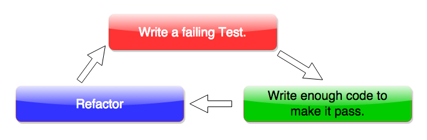

Test-Driven Development
Want low cost and almost no defects? TDD is the answer.
Sunday, 15 February 2015
TDD or Test-Driven Development is a technique used by developers for writing code. Like the name reads, the development or the written code is driven by the tests for it. This means that when a developer has to build a new feature, the developer will first write a test for it and then write enough code to make it pass. To understand TDD better, its best to explain the actual flow of tasks involved.
TDD flow has 3 basic parts.:
1. Write a failing test.
2. Write just enough code to make it pass.
3. Refactor if possible.
These steps are rotating. So after step 3 you would go back to step 1 till the feature is complete. Here is a visual representation of this flow.

I have used Uncle Bob's color code (red-green-blue) re-presentation in the image above. Lets get into the detail a bit. Say I have a new feature request. I as a developer would start with one test first. Basic test here would be to test for the method I want to write. And of course it will fail. This is the red zone. Red doesn't mean bad here, its the expected. Red meaning failed tests. Then I would go create my method and run my tests again. If written correctly, this should show my tests in green. Yep in the green zone now. Next would be the blue zone or refactor. I would try refactor my code if I can.
The red-green-blue is best described by Robert C Martin (Uncle Bob) himself. Here is a piece of the red-green-blue from his original video from Clean Coders. He is using a java program with junit to write his tests. So dont worry if that bothers you, but the red-green-blue concept is explained very well.
If you liked that TDD hat, check this Link.
Let me talk about the benefits of this technique.
By writing tests first, we are also capturing requirements in a way. It lets us ask questions that we think needs answered by our code. Then we write just enough code to pass it. I said 'just enough' here, because that is the goal. Otherwise developers start writing code predicting the future. Well an argument can be made here stating 'should we not code for changes we think might occur in the future and what about unexpected errors?'. We are developers and not psychics, so doing that would give us code that will not be used till the prediction happens. This would add some unwanted weight to our code. And lots of other scary things. Where as for unexpected errors, we should definitely capture them in our tests so we can code for them.
Now that we have tests passing, we can confidently refactor our written code and as long as the tests still pass its all good.
This not only lets us keep our code light and clean. It would also lead to less bugs. And the next developer working on this has an expected et of requirements from your tests as well.
Here is another video of a TDD kata by Jeff Morgan (Cheezy). This is a roman numeral kata performed by Cheezy in ruby. This video demonstrates the complete TDD process where he is trying to create a feature roman to number converter.
Note: In this video Cheezy pretty much starts from an empty directory, setting up guard, with rspec for tests. Awesome watch if you're new to this.